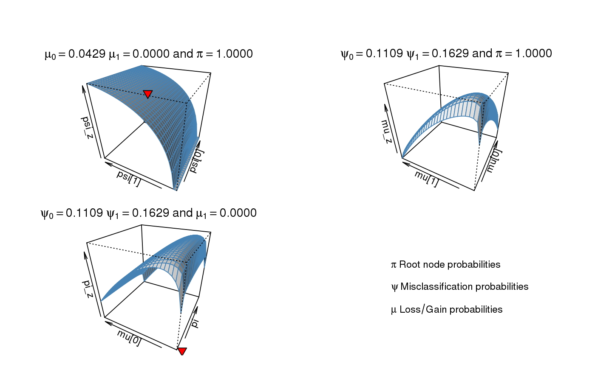

R/estimation.r, R/predict.r
aphylo_estimates-class.RdThe optimization is done via optim.
aphylo_mle(model, params, method = "L-BFGS-B", priors = function(p) 1, control = list(), lower = 0, upper = 1, check.informative = getOption("aphylo.informative", FALSE)) # S3 method for aphylo_estimates print(x, ...) # S3 method for aphylo_estimates coef(object, ...) # S3 method for aphylo_estimates vcov(object, ...) aphylo_mcmc(model, params, priors = function(p) 1, control = list(), check.informative = getOption("aphylo.informative", FALSE)) # S3 method for aphylo_estimates predict(object, ...) prediction_score(x, expected = NULL, alpha = mean(x$dat$tip.annotation == 1L, na.rm = TRUE), W = NULL, ...) # S3 method for aphylo_prediction_score print(x, ...)
| model | A model as specified in aphylo-model. |
|---|---|
| params | A vector of length 7 with initial parameters. In particular
|
| method | Character scalar. When |
| priors | A list of length 3 with functions named |
| control | A list with parameters for the optimization method (see details). |
| lower, upper | Numeric vectors defining the lower and upper bounds respectively. |
| check.informative | Logical scalar. When |
| ... | Further arguments passed to the method |
| object, x | An object of class |
| expected | Integer vector of length \(n\). Expected values (either 0 or 1). |
| alpha | Numeric scalar. Prior belief of the parameter of the bernoulli distribution used to compute the random imputation score. |
| W | A square matrix. Must have as many rows as genes in |
A list of class aphylo_estimates with the following elements:
A numeric vector of length 5 with the solution.
A numeric matrix of size counts*5 with the solution path (length 2 if used optim
as the intermediate steps are not available to the user).
A numeric scalar with the value of fun(par, dat). The value of the log likelihood.
Integer scalar number of steps/batch performed.
Integer scalar. Equal to 0 if optim converged. See optim.
Character scalar. See optim.
A function (the objective function).
If specified, the function priors passed to the method.
The data dat provided to the function.
A numeric vector of length 5 with the initial parameters.
Character scalar with the name of the method used.
A matrix of size 5*5. The estimated covariance matrix.
phylo_mcmc is a wrapper of amcmc::MCMC, so, instead of treating the
problem as a maximization problem, phylo_mcmc generates a Markov Chain.
The default values of control are:
nbatch | Integer scalar. Number of mcmc steps. Default 2e3. |
scale | Numeric scalar. Default 0.01. |
lb | Numeric vector. Default rep(1e-20, 5). |
ub | Numeric vector. Default rep(1 - 1e-20, 5). |
nbatch |
In the case of prediction_score, ... are passed to
predict.aphylo_estimates.
# Using simulated data ------------------------------------------------------ set.seed(19) dat <- sim_annotated_tree(100) dat <- rdrop_annotations(dat, .4) # Computing Estimating the parameters ans <- aphylo_mle(dat ~ psi + mu + eta + Pi) ans#> Warning: NaNs produced#> #> ESTIMATION OF ANNOTATED PHYLOGENETIC TREE #> #> Call: aphylo_mle(model = dat ~ psi + mu + eta + Pi) #> ll: -134.2324, #> Method used: L-BFGS-B (3 iterations) #> convergence: 0 (see ?optim) #> Leafs: #> # of Functions 1 #> Estimate Std. Err. #> psi0 0.1000 NaN #> psi1 0.1000 0.1077 #> mu0 0.1000 NaN #> mu1 0.1000 0.0359 #> eta0 0.9000 NaN #> eta1 0.9000 NaN #> Pi 0.1000 0.0941 #># Plotting the path plot(ans)# Computing Estimating the parameters Using Priors for all the parameters mypriors <- function(params) { dbeta(params, c(2, 2, 2, 2, 1, 10, 2), rep(10, 7)) } ans_dbeta <- aphylo_mle(dat ~ psi + mu + eta + Pi, priors = mypriors) ans_dbeta#> Warning: NaNs produced#> #> ESTIMATION OF ANNOTATED PHYLOGENETIC TREE #> #> Call: aphylo_mle(model = dat ~ psi + mu + eta + Pi, priors = mypriors) #> ll: -153.3401, #> Method used: L-BFGS-B (3 iterations) #> convergence: 0 (see ?optim) #> Leafs: #> # of Functions 1 #> Estimate Std. Err. #> psi0 0.1000 0.1005 #> psi1 0.1000 0.0783 #> mu0 0.1000 0.0393 #> mu1 0.1000 NaN #> eta0 0.9000 0.0173 #> eta1 0.9000 0.0151 #> Pi 0.1000 0.0748 #># Using the MCMC ------------------------------------------------------------# NOT RUN { set.seed(1233) # Simulating a tree tree <- sim_tree(200) # Simulating functions dat <- sim_annotated_tree( tree = tree, psi = c(.01, .03), mu = c(.05, .02), Pi = .5 ) # Running the MCMC set.seed(1231) ans_mcmc <- aphylo_mcmc( dat ~ mu + psi + eta + Pi, control = list(nbatch = 2e5, burnin=1000, thin=200, scale=2e-2) ) # }# Example with prediction_score --------------------------------------------- set.seed(1312) ap <- sim_annotated_tree(10, P = 1, Pi=.2, mu=c(.05,.02)) ans <- aphylo_mcmc( ap ~ mu + eta + psi + Pi, control = list(nbatch=1e4, thin=100), priors = function(x) dbeta(x, 1, 30) )#> Warning: The -coda- package has not been loaded.pr <- prediction_score(ans) with(pr, cbind(Expected = expected, Predicted = predicted))#> fun0000 fun0000 #> 1 0 7.716903e-04 #> 2 0 7.716559e-04 #> 3 0 7.716903e-04 #> 4 0 7.716903e-04 #> 5 0 7.716903e-04 #> 6 0 7.728390e-04 #> 7 0 7.513287e-04 #> 8 0 7.716559e-04 #> 9 0 7.728390e-04 #> 10 0 7.531977e-04 #> 11 0 3.730395e-05 #> 12 0 5.772935e-05 #> 13 0 3.740983e-05 #> 14 0 3.667755e-05 #> 15 0 1.021463e-04 #> 16 0 1.022216e-04 #> 17 0 6.181331e-05 #> 18 0 1.047317e-04 #> 19 0 1.022216e-04